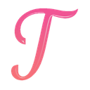

Tab Mission is ready
Chrome could not assign the default shortcut, probably because another extension already uses it. Choose one so you can open Tab Mission from the keyboard.
How it works
- Just type to filter by title or URL. The best match is highlighted, so Enter switches to it.
- Tabs are ordered by recent use, current tab first. Press → and then Enter to jump back to your previous tab.
- Or hover a tab and press the shortcut again to jump there.
- Press Tab in the search box to see only the tabs from the site you are on.
- Middle-click a tab, or click its ×, to close it.
Tip: pin Tab Mission to the toolbar (puzzle icon, then the pin) to open it with one click.
Everything stays in your browser. Tab Mission has no server and collects nothing.